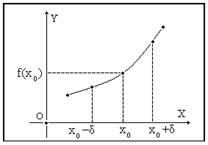
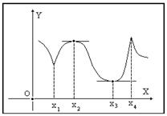

18.1.3. Необходимые условия экстремума
Функция  может иметь
экстремум только в тех точках, в которых ее производная
может иметь
экстремум только в тех точках, в которых ее производная  либо
равна нулю, либо не существует.
либо
равна нулю, либо не существует.
может иметь
экстремум только в тех точках, в которых ее производная либо
равна нулю, либо не существует.
Доказательство:
Пусть в точке  функция
имеет производную и . Пусть для определенности . Тогда функция в точке будет
возрастающей. Поэтому найдется такое
функция
имеет производную и . Пусть для определенности . Тогда функция в точке будет
возрастающей. Поэтому найдется такое  , что для всех
, что для всех  из интервала
из интервала  верно
неравенство
верно
неравенство  , а для всех из
интервала
, а для всех из
интервала  верно неравенство
верно неравенство  .
.
функция
имеет производную и . Пусть для определенности . Тогда функция в точке будет
возрастающей. Поэтому найдется такое , что для всех из интервала верно
неравенство , а для всех из
интервала верно неравенство .Из этого следует, что не существует окрестности точки , в которой величина  была бы наибольшим или наименьшим
значением функции , и поэтому точка не будет ни точкой максимума, ни
точкой минимума функции . Аналогичными
рассуждениями придем к тому же выводу при .
была бы наибольшим или наименьшим
значением функции , и поэтому точка не будет ни точкой максимума, ни
точкой минимума функции . Аналогичными
рассуждениями придем к тому же выводу при .
, в которой величина была бы наибольшим или наименьшим
значением функции , и поэтому точка не будет ни точкой максимума, ни
точкой минимума функции . Аналогичными
рассуждениями придем к тому же выводу при .Итак, если в точке существует
производная , то в точке не
может быть ни максимума, ни минимума функции .
Следовательно, экстремум функции может быть только
в такой точке, в которой производная либо равна нулю,
либо не существует, что показано на рисунке.
существует
производная , то в точке не
может быть ни максимума, ни минимума функции .
Следовательно, экстремум функции может быть только
в такой точке, в которой производная либо равна нулю,
либо не существует, что показано на рисунке.
Функция  имеет экстремумы
в точках ; при этом в точках и производная
не существует, а в точках
имеет экстремумы
в точках ; при этом в точках и производная
не существует, а в точках  и
и  она
равна нулю.
она
равна нулю.
имеет экстремумы
в точках ; при этом в точках и производная
не существует, а в точках и она
равна нулю.Точки, в которых выполняется необходимое условие экстремума
для функции , называются критическими точками
этой функции. Они определяются как корни уравнения и
как точки, где не существует (в
частности, где - бесконечно большая
функция).
, называются критическими точками
этой функции. Они определяются как корни уравнения и
как точки, где не существует (в
частности, где - бесконечно большая
функция).Корни уравнения называют
стационарными точками функции : скорость
изменения в такой точке равна нулю.
: скорость
изменения в такой точке равна нулю.Утверждение, обратное к теореме, неверно: не в каждой своей
критической точке функция обязательно имеет
максимум или минимум.
обязательно имеет
максимум или минимум.Например, для функции , поэтому точка  является критической для данной
функции. Но функция в точке экстремума не имеет:
является критической для данной
функции. Но функция в точке экстремума не имеет:  , для
, для 
 , для
, для  , так что в точке данная функция возрастает. Для
функции в точке производная
не существует, однако экстремум отсутствует.
, так что в точке данная функция возрастает. Для
функции в точке производная
не существует, однако экстремум отсутствует.
является критической для данной
функции. Но функция в точке экстремума не имеет: , для , для , так что в точке данная функция возрастает. Для
функции в точке производная
не существует, однако экстремум отсутствует.